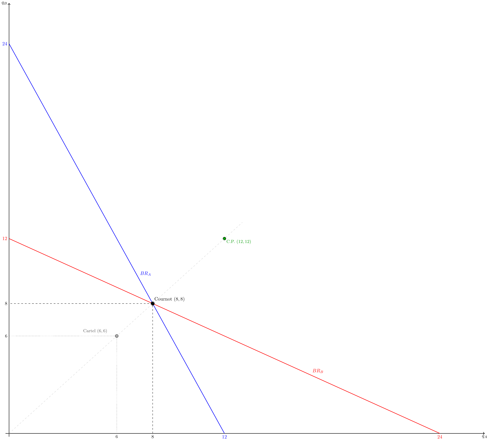

Microeconomia
Aula 23 — Oligopólio: O Modelo de Cournot
1 Oligopólio
1.1 Características do Oligopólio
- Poucas empresas dominam o mercado — tipicamente 2 a 10
- Produto pode ser homogéneo (petróleo, aço) ou diferenciado (automóveis, smartphones)
- Barreiras à entrada significativas — custos elevados, economias de escala, patentes
- Interdependência estratégica — o lucro de cada empresa depende das decisões das rivais
. . .
Important
A característica central do oligopólio é a interdependência estratégica. A empresa A não pode optimizar sem antecipar o comportamento da empresa B — e B sabe que A sabe isso. É precisamente aqui que a teoria de jogos se aplica.
1.2 Como Modelar o Oligopólio?
A variável estratégica define o modelo:
. . .
| Modelo | Variável estratégica | Timing |
|---|---|---|
| Cournot | Quantidade | Simultâneo |
| Stackelberg | Quantidade | Sequencial |
| Bertrand | Preço | Simultâneo |
. . .
Hoje: Cournot — cada empresa escolhe simultaneamente a quantidade a produzir, tomando a quantidade da rival como dada.
2 O Modelo de Cournot
2.1 Estrutura do Modelo
Duopólio simétrico:
- Duas empresas, A e B, produzem um bem homogéneo
- Procura inversa de mercado: \(P = a - b(q_A + q_B)\)
- Custos idênticos: \(CT_i = c \cdot q_i\) (custo marginal constante \(Cmg = c\), sem custos fixos)
- Decisão simultânea de quantidade — nenhuma empresa observa a escolha da outra antes de decidir
. . .
Note
A hipótese de Cournot: cada empresa trata a quantidade da rival como fixa ao optimizar. É uma hipótese simplificadora mas gera um equilíbrio de Nash bem definido.
2.2 Maximização do Lucro — Empresa A
O lucro da empresa A é:
\[\Pi_A = P \cdot q_A - c \cdot q_A = \bigl[a - b(q_A + q_B)\bigr] q_A - c \cdot q_A\]
. . .
Expandindo:
\[\Pi_A = (a - c)\,q_A - b\,q_A^2 - b\,q_A q_B\]
. . .
Condição de primeira ordem (\(q_B\) tratado como fixo):
\[\frac{\partial \Pi_A}{\partial q_A} = (a - c) - 2b\,q_A - b\,q_B = 0\]
. . .
\[\boxed{q_A^* = \frac{a-c}{2b} - \frac{q_B}{2}}\]
2.3 A Função de Reacção (Best Response)
\[q_A^*(q_B) = \frac{a-c}{2b} - \frac{1}{2}\,q_B\]
. . .
Esta é a função de reacção (ou best response) da empresa A: para cada valor de \(q_B\), indica a quantidade óptima de A.
. . .
- Quando \(q_B = 0\): \(q_A^* = \dfrac{a-c}{2b}\) — A produz como monopolista
- Quando \(q_B\) aumenta: \(q_A^*\) diminui — A produz menos porque o preço já é pressionado pela produção de B
- A inclinação é \(-\tfrac{1}{2}\): por cada unidade adicional de B, A reduz a sua produção em meia unidade
. . .
Por simetria, a função de reacção de B é:
\[q_B^*(q_A) = \frac{a-c}{2b} - \frac{1}{2}\,q_A\]
2.4 Equilíbrio de Nash de Cournot
O equilíbrio ocorre quando ambas as empresas estão na sua função de reacção simultaneamente:
\[q_A = q_B^*(q_A) \quad \text{e} \quad q_B = q_A^*(q_B)\]
. . .
Substituindo \(q_B^*\) na função de reacção de A (duopólio simétrico):
\[q_A = \frac{a-c}{2b} - \frac{1}{2}\left(\frac{a-c}{2b} - \frac{q_A}{2}\right) = \frac{a-c}{2b} - \frac{a-c}{4b} + \frac{q_A}{4}\]
\[\frac{3}{4}\,q_A = \frac{a-c}{4b} \quad\Rightarrow\quad \boxed{q_A^* = q_B^* = \frac{a-c}{3b}}\]
. . .
Quantidade total e preço de equilíbrio:
\[Q^*_C = \frac{2(a-c)}{3b} \qquad P^*_C = a - b\,Q^*_C = \frac{a + 2c}{3}\]
2.5 Diagrama das Funções de Reacção
2.6 Leitura do Diagrama
- \(BR_A\) (azul): função de reacção de A — para cada \(q_B\), a melhor resposta de A
- \(BR_B\) (vermelha): função de reacção de B — para cada \(q_A\), a melhor resposta de B
- Cournot (8, 8): interseção das duas funções — único ponto em que ambas as empresas estão simultaneamente a optimizar
- Cartel (6, 6): se as empresas cooperassem, produziriam menos e ganhariam mais — mas não está na intersecção das BRs, logo não é estável
- C.P. (12, 12): equilíbrio competitivo — está fora da região de lucros positivos de cada empresa
. . .
Important
O Cartel (6, 6) não é um Equilíbrio de Nash: se B produz 6, a melhor resposta de A é \(BR_A(6) = 12 - 3 = 9 \neq 6\). Cada empresa tem incentivo a desviar — o cartel é instável.
3 Equilíbrio Numérico
3.1 Exemplo: \(P = 30 - Q\), \(Cmg = 6\)
Com \(a=30\), \(b=1\), \(c=6\):
. . .
Funções de reacção:
\[q_A^*(q_B) = 12 - \frac{q_B}{2} \qquad q_B^*(q_A) = 12 - \frac{q_A}{2}\]
. . .
Equilíbrio de Cournot (resolver o sistema):
\[q_A^* = 12 - \frac{q_A^*}{4} \cdot \ldots \quad \Rightarrow \quad q_A^* = q_B^* = \frac{30-6}{3} = 8\]
. . .
\[Q^*_C = 16 \qquad P^*_C = 30 - 16 = 14 \qquad \Pi^*_{\text{cada}} = (14-6)\times 8 = 64\]
3.2 Comparação entre Estruturas de Mercado
| Estrutura | \(Q\) | \(P\) | \(\Pi\) cada |
|---|---|---|---|
| Monopólio (cartel) | \(12\) | \(18\) | \(72\) |
| Cournot | \(16\) | \(14\) | \(64\) |
| Concorrência Perfeita | \(24\) | \(6\) | \(0\) |
. . .
Note
Ordenações que sempre se verificam (duopólio simétrico):
\(Q_{\text{mono}} < Q_{\text{Cournot}} < Q_{\text{CP}}\)
\(P_{\text{mono}} > P_{\text{Cournot}} > P_{\text{CP}}\)
\(\Pi_{\text{mono}}/2 > \Pi_{\text{Cournot}} > 0\)
3.3 Por que o Cartel é Instável?
Se ambas cooperassem e produzissem \(q = 6\) cada (resultado de monopólio):
. . .
A empresa A verifica: \(BR_A(6) = 12 - 3 = 9 \neq 6\)
. . .
Se A desviar para \(q_A = 9\) (com \(q_B = 6\)):
\[P = 30 - (9+6) = 15 \qquad \Pi_A = (15-6)\times 9 = 81 > 72\]
. . .
Important
Ao desviar do cartel, A aumenta o lucro de \(72\) para \(81\). B raciocina da mesma forma. O acordo colapsa — estrutura de dilema do prisioneiro.
Esta ligação entre Cournot e teoria de jogos (aula anterior) é exacta: o equilíbrio de Cournot é o Equilíbrio de Nash do jogo em que as estratégias são quantidades.
4 Exercícios
4.1 Exercício 1 — Escolha Múltipla
No modelo de Cournot com duas empresas simétricas e procura linear, quando a empresa A aumenta a sua produção, a função de reacção da empresa B indica que B deve:
- Aumentar também a produção, para manter a quota de mercado
- Manter a produção inalterada, pois toma \(q_A\) como dado
- Reduzir a produção, porque o preço de mercado desceu
- Sair do mercado se o preço cair abaixo do custo médio
4.2 Solução — Exercício 1
A função de reacção de B é \(q_B^*(q_A) = \dfrac{a-c}{2b} - \dfrac{1}{2}q_A\).
A inclinação é \(-\tfrac{1}{2}\): quando \(q_A\) sobe 1 unidade, \(q_B^*\) desce \(\tfrac{1}{2}\).
Resposta: (c) — B reduz a produção porque a maior quantidade de A baixa o preço de mercado; a melhor resposta de B é produzir menos para limitar a queda do preço que recebe.
- descreve a hipótese de Cournot (B toma \(q_A\) como dado ao optimizar), não a direcção da resposta óptima quando \(q_A\) muda.
4.3 Exercício 2 — Escolha Múltipla
No equilíbrio de Cournot de um duopólio simétrico, comparando com o resultado de monopólio:
- A quantidade total é maior e o preço é menor
- A quantidade total é menor e o preço é maior
- O lucro de cada empresa é maior do que metade do lucro de monopólio
- O resultado é eficiente porque \(P = Cmg\)
4.4 Solução — Exercício 2
- (a) Verdadeiro — \(Q_C > Q_m\) e \(P_C < P_m\): a concorrência entre as duas empresas aumenta a produção total e baixa o preço face ao monopólio
- Falso — inverte as ordenações correctas
- Falso — o lucro de cada empresa em Cournot (\(64\)) é menor do que metade do lucro de monopólio (\(72\)): a concorrência dissipa parte dos lucros
- Falso — em Cournot \(P > Cmg\); o resultado é ineficiente (existe DWL), embora menor do que em monopólio
Resposta: (a)
4.5 Exercício de Desenvolvimento
Duas empresas, A e B, operam num mercado com procura inversa \(P = 30 - (q_A + q_B)\).
Ambas têm custo marginal constante \(Cmg = 6\) e sem custos fixos.
Alíneas:
- Derive a função de reacção (best response) da empresa A, \(q_A^*(q_B)\).
- Por simetria, escreva a função de reacção de B. Resolva o sistema para obter o equilíbrio de Cournot \((q_A^*, q_B^*)\).
- Calcule a quantidade total \(Q^*_C\), o preço \(P^*_C\) e o lucro de cada empresa \(\Pi^*_C\).
- Determine o resultado de monopólio: quantidade, preço e lucro total. Compare com Cournot.
- Mostre que o acordo de cartel (cada empresa produz \(q=6\)) não é estável: calcule o lucro de A se se desviar enquanto B produz 6.
- Determine o equilíbrio de concorrência perfeita e complete a tabela comparativa.
4.6 Solução — Exercício de Desenvolvimento
a) \(\Pi_A = (30 - q_A - q_B)q_A - 6q_A\). CPO: \(\dfrac{\partial \Pi_A}{\partial q_A} = 24 - 2q_A - q_B = 0\)
\[q_A^*(q_B) = 12 - \frac{q_B}{2}\]
. . .
b) \(q_B^*(q_A) = 12 - \dfrac{q_A}{2}\). Substituindo: \(q_A = 12 - \dfrac{1}{2}\!\left(12 - \dfrac{q_A}{2}\right) = 6 + \dfrac{q_A}{4}\)
\(\dfrac{3}{4}q_A = 6 \Rightarrow q_A^* = q_B^* = 8\)
. . .
c) \(Q^*_C = 16\), \(P^*_C = 30-16 = 14\), \(\Pi^*_C = (14-6)\times 8 = 64\) cada
. . .
d) Monopolista: \(Rmg = 30-2Q = 6 \Rightarrow Q_m=12\), \(P_m=18\), \(\Pi_m=144\) (cada: \(72\))
Cournot produz mais (\(16>12\)), cobra menos (\(14<18\)), lucro por empresa menor (\(64<72\)).
. . .
e) Se B produz \(6\): \(q_A^{dev} = 12-3=9\), \(P=30-15=15\), \(\Pi_A^{dev}=(15-6)\times 9=81>72\) ✓
A tem incentivo a desviar do cartel — o acordo é instável.
4.7 Solução — Exercício de Desenvolvimento
f) \(P=Cmg \Rightarrow 30-Q=6 \Rightarrow Q_{cp}=24\), \(P_{cp}=6\), \(\Pi=0\)
| Estrutura | \(Q\) | \(P\) | \(\Pi\) cada |
|---|---|---|---|
| Monopólio | \(12\) | \(18\) | \(72\) |
| Cournot | \(16\) | \(14\) | \(64\) |
| Conc. Perf. | \(24\) | \(6\) | \(0\) |